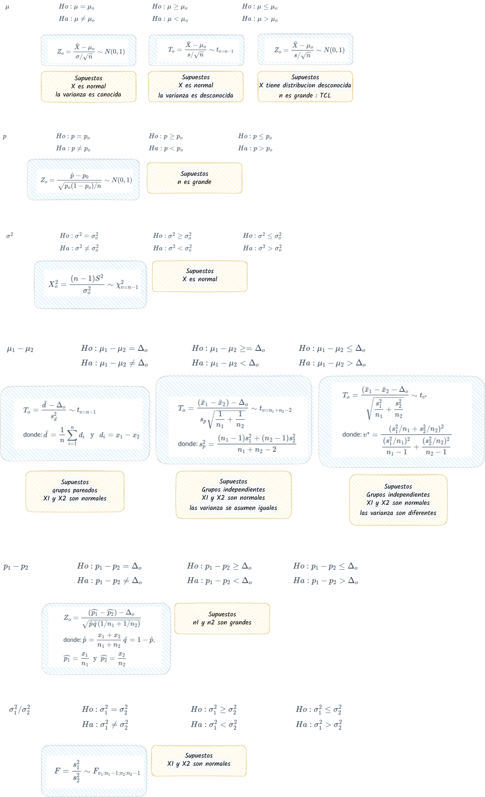

Módulo 3
dgonzalez

Taller 431
punto 1
Suponga que se estudia la compra de una nueva maquina para una empresa. Se comprará si la proporción de la producción que necesita ser reprecesados por tener defectos es inferior al 5%. Se examina una muestra de 40 artículos construidos por la máquina y 3 necesitan ser reprocesados. ¿Que decisión se toma? (Se compra o no la máquina?)
punto 2
Suponga que una empresa desarrolla un curso de entrenamiento
para sus empleados, formando dos grupos y aplicándoles dos métodos
distintos de entrenamiento. El primer grupo lo componen 36 empleados,
mientras que el segundo grupo por 40 empleados. Los resultados en
calificaciones entre 0 y 10, se presentan a continuación:
grupos : n media varianza grupo 1 : 36 7.125 1.415643 grupo 1 : 40 8.075 0.9798718 
punto 3
Los ingenieros de una ensambladora de automóviles requieren decidir sobre cual de dos de las marcas de neumáticos de deben comprar. La marca FB o la marca KT. Con el fin de tomar una decisión basada en evidencias estadísticas, deciden realizar un experimento en el que usan 12 neumáticos de cada marca. Los neumáticos se utilizan hasta su terminación . Los resultados obtenidos (en miles de kilometros) se presentan a continuación :
marcas : n media varianza FB : 12 37.20833 29.33902 KT : 12 41.66667 12.13879 ¿Cual de las marcas de neumáticos recomendaría comprar? ¿Que supuestos deberá confirmar?. Utilice un \(\alpha=0.05\)
punto 4
Un ingeniero desea establecer si existen diferencias entre dos métodos diferentes de realizar el ensamble de una casa prefabricada. Para comprobarlo recogen información del tiempo empleado en el ensamble de una pieza para ambos métodos en horas, los cuales se presentan a continuación:
métodos : n media varianza nuevo : 9 35.22222 24.44444 estandar : 9 31.55556 20.02778 
Presentan los datos suficiente evidencia que permita afirmar que el nuevo método es mas eficiente que el método estándar? (Utilice un \(\alpha=0.05\))
punto 5
El director de un gimnasio quiere determinar si un instructor de ejercicios debe ser contratado o no para su campaña estrella “Reducción de peso”. Para tomar la decisión indica a un candidato que pruebe con 16 personas que asisten habitualmente al gimnasio. Los siguientes datos corresponden a los pesos tomados al inicio del programa (\(x1\)) y sus pesos al finalizar el programa (\(x2\))
tiempo : n media varianza inicio : 16 90.875 153.7167 final : 16 88.5625 111.9958 ¿Que supuestos se deben verificar? ¿Se podría decir que las rutinas empleadas por el instructor producen los efectos indicados?
punto 6
Se realizan pruebas de un nuevo lector láser manual para uso en la realización de inventarios y del lector utilizado actualmente, con el fin de decidir si se adquiere el primero. Se obtienen los datos sobre el número de códigos de barra leídos por segundo con el cada uno de los dispositivos.
instrumento : n media varianza nuevo : 61 40.5082 27.1541 actual : 61 29.54098 17.61913 De acuerdo con la información, es posible preferir alguno de ellos? ¿Que supuestos se deben verificar?
punto 7
Un empresario registro el número de artículos producidos durante 10 días para un grupo conformado por 15 obreros los cuales tienen un salario fijo (grupo 1). El gerente piensa que si se cambia la forma del salario tendrán mejores resultados. Para verificarlo introduce cambios en la forma de pago a un segundo grupo (grupo 2) . El numero de artículos producidos por ambos grupos son los siguientes:
grupos : n media varianza grupo 1 : 10 75.1 6.544444 grupo 2 : 10 82.4 13.37778 
Suponiendo que los salarios pagados a ambos grupos son equivalentes, se podría afirmar que el plan de incentivos es efectivo? ¿Que supuestos se deben verificar?
punto 8
La pizzeria P20 realizó el mes pasado una encuestas (\(n_1=200\)) para determinar la proporción de clientes que prefieren el tamaño familiar. La encuesta recogida muestra que el 20% de sus clientes prefieren el tamaño familiar. Con el fin de aumentar las ventas, realiza una estrategia de publicidad en redes. Pasado dos meses de la campaña la empresa realizó una segunda encuesta (\(n_2=200\)), obteniendo en este caso una proporción de 25%.
De acuerdo con los resultados podría decirse que la campaña realizada es efectiva? (utilice un \(\alpha=0.05\))
# prop.test(c(40,50), c(200,200), conf.level = 0.95)Formulario
| parámetro | intervalo de confianza | |
|---|---|---|
| media | \[IC_{\mu}: \bar{x} \pm z_{\alpha/2} \hspace{.1cm}\frac{\sigma}{\sqrt{n}}\] | (1) |
| \[IC_{\mu}: \bar{x} \pm z_{\alpha/2} \hspace{.1cm}\frac{s}{\sqrt{n}}\] | (2) | |
| \[IC_{\mu}: \bar{x} \pm t_{\alpha/2; v=n-1} \hspace{.1cm}\frac{s}{\sqrt{n}}\] | (3) | |
| tamaño muestra | \[n = \displaystyle\frac{z_{\alpha/2}^{2}\sigma^{2}}{e^{2}}\] | (4) |
| \[n=\dfrac{n_{o}N}{n_{o}+N-1}\] | (5) | |
| ajsutado | \[IC_{\mu}: \bar{x} \pm t_{\alpha/2} \hspace{.1cm}\frac{s}{\sqrt{n}} \sqrt{\dfrac{N-n}{N-1}}\] | (6) |
| proporción | \[IC_{p}: \widehat{p} \pm z_{\alpha/2} \hspace{.1cm}\sqrt{\frac{\widehat{p}(1-\widehat{p})}{n}}\] | (7) |
| tamaño muestra | \[n=\dfrac{z^{2} p(1-p)}{e^{2}}\] | (8) |
| \[n=\dfrac{Z_{\alpha/2}^{2} \times 0.50(1-0.50)}{e^{2}}\] | (9) | |
| varianza | \[IC_{\sigma^{2}}: \Bigg( \dfrac{(n-1)S^{2}}{\chi^{2}_{\alpha/2}} ;\dfrac{(n-1)S^{2}}{\chi^{2}_{1-\alpha/2}} \Bigg)\] | (10) |
| diferencia medias | \[IC_{d=x_{1}-x_{2}}: \bar{d} \pm t_{\alpha/2} \dfrac{s_{d}}{\sqrt{n}}\] | (11) |
| \[(x_{1}-x_{2})\pm t_{\alpha/2} \hspace{.2cm}s_{p} \sqrt{\frac{1}{n_{1}}+\frac{1}{n_{2}}}\] | (12) | |
| \(s_{p}^{2}\) es \(s_{p}^{2}=\dfrac{(n_{1}-1)s_{1}^{2}+(n_{2}-1)s_{2}^{2}}{n_{1}+n_{2}-2}\) y \(v=n_{1}+n_{2}-2\) | ||
| \[(x_{1}-x_{2})\pm t_{\alpha/2} \sqrt{\frac{s_{1}^{2}}{n_{1}}+\frac{s_{2}^{2}}{n_{2}}}\] | (13) | |
| \[v=\frac{(s_{1}^{2}/n_{1}+s_{2}^{2}/n_{2})^{2}}{\Big[(s_{1}^{2}/n_{1})^{2}/(n_{1}-1)\Big]+\Big[(s_{2}^{2}/n_{2})^{2}/(n_{2}-1)\Big]}\] | ||
| diferencia de proporciones | \[IC_{p}: (\widehat{p_{1}} - \widehat{p_{2}}) \pm z_{\alpha/2} \hspace{.1cm}\sqrt{\frac{\widehat{p_{1}}(1-\widehat{p_{1}})}{n_{1}}+ \frac{\widehat{p_{2}}(1-\widehat{p_{2}})}{n_{2}}}\] | (14) |
| razón de varianzas | \[\Bigg(\dfrac{s_{1}^{2}}{s_{2}^{2}} \dfrac{1}{f_{1-\alpha/2}(v_{1},v_{2})}; \dfrac{s_{1}^{2}}{s_{2}^{2}}\dfrac{1}{f_{\alpha/2}(v_{2},v_{1})}\Bigg)\] | (15) |
